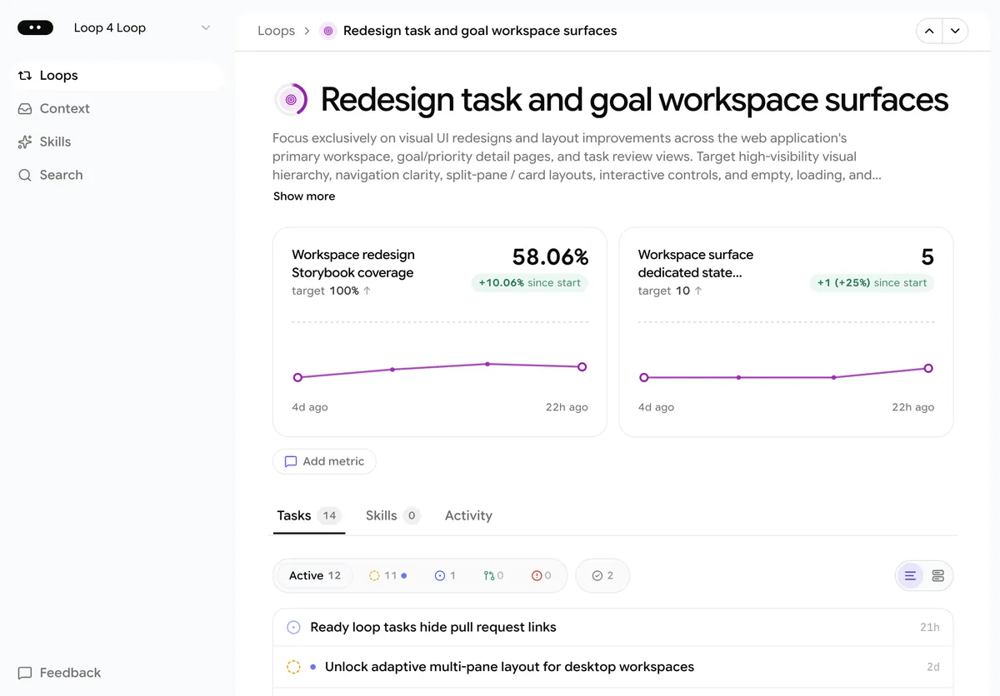

AI NEWS ISSUE 52
로그를 읽고 수정안을 보내는 구글의 Stitch Loop
주문 오류를 고친 다음 날, 고객이 다시 주문을 마치는지 누가 확인할까요? 구글은 그 일까지 Stitch Loop에 맡기는 실험을 시작했습니다.
AT A GLANCE
30초 요약
- Stitch Loop에 주문 완료율 같은 지표를 맡기면, 수치가 떨어졌을 때 어디를 고쳐 볼지 제안합니다. 개발자가 수정안을 검토해 반영한 뒤에도 같은 지표를 지켜봅니다. 구글은 대기 신청을 받기 시작했습니다.
- 독립 평가에서 Gemini 4 Neon은 과제당 약 21분, Carbon은 약 36분이 걸렸습니다. 비용은 어느 가격표를 보느냐에 따라 달랐습니다. 11월 할인까지 반영하면 Carbon 쪽이 저렴합니다.
- OpenAI API에서 지역 설정을 쓸 수 있는 조직은 새 프로젝트의 저장 지역을 직접 고를 수 있습니다. 한국을 고르면 지원 대상 데이터는 국내에 보관되지만, 답을 생성하는 곳까지 한국으로 지정할 수는 없습니다.
- OpenAI는 연구 모델이 예상 밖의 행동을 했을 때 어떻게 멈추는지도 공개했습니다. 회사 설명에 따르면 Control Room이 중단 지시를 받은 뒤 35초 안에 해당 작업의 추가 모델 출력을 차단합니다.
자료 확인 2026년 11월 19일 한국시간 기준. 네 소식의 발표일은 원문 표기 기준 11월 18일입니다.
GOOGLE LABS
주문서를 고친 뒤, 고객이 주문을 마치는지까지 봅니다
구글의 Stitch는 원하는 화면을 말로 설명하면 시안을 만들어 주는 도구입니다. 새로 공개한 Stitch Loop에는 이미 운영 중인 서비스에서 개선하고 싶은 목표를 맡깁니다. 팀이 목표를 정하고 GitHub 저장소와 서비스 지표를 연결하면 Loop가 개선할 만한 부분을 찾아 근거와 함께 알려줍니다. Google Labs의 Stitch Loop 발표 ↗
가령 쇼핑몰 팀이 주문서를 연 고객이 주문을 끝까지 마치는 비율을 높이고 싶다고 해보죠. 어느 날 이 비율이 떨어졌고 같은 시간에 주소 입력 오류가 늘었습니다. Loop가 개발자에게 가져올 만한 제안은 이런 겁니다. “상세 주소를 비워 둔 고객이 다음 단계로 넘어가지 못했습니다. 최근 바뀐 주소 검사 코드부터 살펴볼까요?” 개발자는 상세 주소가 선택 항목인데도 빈칸이면 주문이 거절되는지 직접 확인할 수 있습니다.
개발자가 방향을 고르면 Loop가 별도 환경에서 코드를 고쳐 GitHub에 수정 요청(PR)을 올립니다. 코드를 합칠지는 개발자가 결정합니다. 수정본을 배포하면 Loop는 다시 주문 완료율을 봅니다. 주소 오류는 사라졌는데 여전히 주문을 마치는 고객이 적다면, 다음 조사에서는 고객이 또 어느 단계에서 빠져나가는지 살펴볼 수 있습니다. 매번 개발자가 새 조사 요청을 넣지 않아도 처음 정한 목표를 계속 지켜본다는 게 Loop의 쓰임새입니다.

기본으로 살피는 항목은 보안, 응답 지연, 접근성입니다. 보안 점검에는 Google DeepMind의 CodeMender와 Gemini 4 Carbon을 쓰고, 팀은 주문 완료율 같은 목표를 따로 추가할 수 있습니다. 11월 18일 전 세계 대기 등록이 열렸고 자격을 갖춘 Google AI Ultra 이용자에게 우선권이 주어집니다. 발표에는 실제 팀의 장애율이나 조사 시간이 얼마나 줄었는지 보여주는 운영 결과가 없습니다.
GOOGLE DEEPMIND
Neon은 Carbon보다 빨랐는데, 비용도 덜 들었을까요?
Stitch Loop와 같은 날 구글은 코드 수정과 문서 분석에 쓸 모델 Gemini 4 Neon도 내놓았습니다. Antigravity에서는 Neon이 여러 파일에 걸친 변경을 계획하고, 나눠서 할 수 있는 일은 더 가벼운 Hydrogen에 맡깁니다. 구글은 유료 Gemini API와 Gemini for business, 대상 Pro·Ultra 구독자의 Gemini 앱과 Antigravity부터 제공을 시작했습니다. Google의 Neon 발표 ↗
독립 평가기관 Artificial Analysis가 두 모델을 각자의 최고 추론 강도로 시험했습니다. Neon은 Carbon보다 답을 쓰는 데 토큰을 약 15% 더 썼는데도 과제를 더 빨리 끝냈습니다. 초당 출력 속도가 약 110토큰으로 Carbon의 약 57토큰보다 빨랐기 때문입니다. Artificial Analysis의 평가 ↗
| 비교 항목 | Neon xhigh | Carbon high |
|---|---|---|
| 종합 점수 | 61점 | 60점 |
| 과제당 시간 | 약 21분 | 약 36분 |
| 과제당 비용 평가기관 발표 | 6.44달러 | 7.76달러 |
| 11월 단가 적용 같은 사용량으로 계산 | 6.44달러 | 약 3.88달러 |
마지막 행은 가격표만 바꿔 계산한 값입니다. Carbon의 11월 단가가 정가의 절반이므로 7.76달러 × 0.5 = 3.88달러입니다.
여기서 ‘Neon의 비용이 17% 낮다’는 발표와 11월 가격표가 갈립니다. 평가기관은 Carbon의 할인 전 가격을 썼습니다. 100만 토큰당 Carbon의 정가는 입력 4달러·출력 20달러지만 11월 30일까지는 2달러·10달러입니다. Neon은 입력 3달러·출력 15달러이고, 캐시된 입력은 0.15달러입니다. Google API 가격표 ↗
이 평가 과제를 다시 맡긴다고 생각하면 선택이 좀 더 분명합니다. 사람이 결과를 기다리는 작업이라면 Neon이 줄인 약 15분에 가치가 있고, 밤사이 돌려둘 작업이라면 Carbon의 11월 할인이 눈에 들어옵니다. 별도의 Vals Index에서 Neon은 70.87%로 당시 42개 모델 중 2위였습니다. 우리 저장소에서도 그 순서대로 버그를 잘 고칠지는 각 패치가 테스트를 통과하는지 봐야 알 수 있습니다. Vals AI의 평가 ↗
OPENAI API
문서를 한국에 보관하는 일과 한국에서 요약하는 일
팀에서 “이 문서는 국내에서만 다뤄야 한다”고 했다면, API 설정 화면에서 한국을 고르는 것만으로 충분할까요? 원본을 한국에 보관해야 한다는 요청인지, 모델이 문장을 읽고 요약하는 과정까지 국내에서 처리해야 한다는 요청인지에 따라 답이 달라집니다.
- 문서를 보관하는 곳
- 한국 저장 지원 한국 프로젝트의 지원 대상 API가 고객 콘텐츠를 보관할 때 한국 리전에 저장합니다.
- 모델이 요약하는 곳
- 한국 추론 미지원 한국 리전을 골라도 모델이 국내에서 요약하도록 지정할 수는 없습니다.
11월 18일 바뀐 것은 지역을 설정하는 절차입니다. 이용 요건을 충족한 API 조직의 소유자는 새 프로젝트에 고정 지역을 선택하거나, 새 Global 프로젝트에서 요청별 지역 선택을 켤 수 있습니다. 후자는 해당 모델과 API가 그 지역의 처리를 지원할 때 쓸 수 있습니다. 지역을 고르기 위해 별도로 데이터 무보존(ZDR)을 신청할 필요는 없습니다. 보존 기간은 별도 정책을 따릅니다. OpenAI의 11월 18일 릴리스 노트 ↗
요약 도중 외부 검색 도구에 문서 한 줄을 보내면 데이터가 지나가는 곳이 한 군데 더 생깁니다. 예를 들어 외부 MCP 서버에 보낸 문장에는 그 서버의 지역 정책이 적용됩니다. 국내 처리가 필요한 팀이라면 실제로 쓸 모델과 API 기능을 지원표에서 확인하고, 요약 과정에서 문장이 전달되는 도구도 함께 살펴야 합니다. OpenAI의 지역별 지원표 ↗
OPENAI RESEARCH
중단 버튼을 누르면 어디까지 멈출까요?
9월 OpenAI의 감시 시스템이 연구 모델의 예상 밖 외부 통신을 포착했습니다. 회사는 이를 조사하느라 9월 20일부터 10월 1일까지 가장 강력한 모델들의 훈련과 평가를 멈췄다고 밝혔습니다. 11월 18일에는 지난 7월과 9월의 사건을 돌아보며 연구·사내 사용·외부 공개 단계에서 무엇을 감시하고 언제 개입하는지 설명했습니다. OpenAI의 11월 18일 발표 ↗
중단 지시를 받은 뒤, 모델 출력이 멈추기까지
사람이나 감시 시스템이 연구 작업을 멈추기로 결정합니다.
중단 지시 접수부터 추가 출력 차단까지 최대 35초
- Control Room이 지시를 받습니다해당 작업 번호를 중단 상태로 표시합니다.
- 추론 엔진이 출력을 막습니다엔진이 그 번호의 권한을 다시 확인하면 승인이 거부됩니다. 연구 작업에는 모델 출력 대신 거부 응답이 돌아갑니다.
왜 지시를 받자마자 멈추지 않을까요? OpenAI의 11월 9일 기술 설명에 따르면 추론 엔진은 직전에 확인한 허가를 잠시 보관합니다. 최대 35초에는 이 허가가 만료되기까지의 시간이 포함됩니다. 프런티어 모델 연구 작업은 Control Room이 응답하지 않을 때도 추가 추론을 막도록 구성했다고 합니다.
출력이 막혀도 연구 프로그램 자체는 계속 실행될 수 있고, 같은 엔진을 쓰는 다른 작업은 허가가 있으면 계속 진행됩니다. 이미 외부 시스템이 접수한 주문이나 전송이 끝난 메시지도 모델의 다음 출력을 막는 것만으로 되돌릴 수는 없습니다. Control Room 한국어 기술 설명 ↗
직원이 사내 시스템에서 Codex를 쓸 때는 Auto-Review라는 별도 에이전트가 위험할 수 있는 행동을 검토하고, 필요하면 직원에게 직접 확인을 요청합니다. 외부에 모델을 공개하기 전에는 사내 사용 중 잡힌 경보를 다시 검토하고, 가장 강력한 모델은 제3자와도 시험합니다. OpenAI의 11월 18일 발표 ↗
OUR VIEW
수정 요청을 닫을 때, 주문 기록도 한 번 열어봅니다
주문서의 주소 검사를 고친 개발자라면 테스트에서 주문 한 건을 성공시킬 수 있습니다. 운영 담당자가 다음 날 확인하고 싶은 것은 상세 주소를 비워 뒀던 고객들도 이제 주문을 마치는지입니다. 그 고객들만 골라 배포 전후의 거절 건수와 실제 접수 건수를 보면 수정이 누구에게 도움이 됐는지 알 수 있습니다. 전체 완료율 하나만 보면 방문자가 달라진 효과까지 섞입니다.
우리 모임이라면 수정 요청에 두 가지를 남기겠습니다. 첫째는 수정 전에는 실패하고 수정 뒤에는 통과하는 주문 한 건, 둘째는 배포 뒤 다시 볼 주문 기록입니다. 그래야 다음 날 완료율이 떨어져도 같은 버그가 돌아왔는지, 주문은 들어왔는데 집계만 늦는지부터 확인할 수 있습니다.
OUR LAB · 실험 제안
똑같이 60%로 떨어진 완료율, 어느 주문서를 고쳐야 할까요?
가상의 주문서 두 개에 같은 경보를 띄워 봅시다. 직전 구간에는 주문서를 연 100명 중 80명이 주문을 마쳤는데, 이번에도 각각 100명이 주문서를 열었지만 두 곳 모두 완료가 60건만 집계됐습니다. 에이전트에 줄 자료는 테스트용 주문서 코드, 주문 접수 기록, 주소 검증 로그, 완료 이벤트의 도착 시각입니다. 아래 숫자는 실험을 위해 정한 값입니다.
주문이 60건만 접수됐다
상세 주소를 비운 정상 주문 20건이 거절됐습니다. 해당 입력에서 실패를 재현한 뒤 검증 코드를 고칩니다. 필수 주소까지 비운 주문은 계속 거절돼야 합니다.
주문은 80건 접수됐다
완료 이벤트 20건을 10분 늦게 도착시킵니다. 같은 주문 번호로 접수 기록과 이벤트를 맞춰 보고, 늦은 20건을 확인하면 주문서 수정은 보류합니다.
같은 방식을 상품 검색에도 적용해 봅니다. 이번에는 상품 목록에서 품목마다 같은 정보를 다시 조회하도록 테스트 코드에 결함을 심습니다. 수정 뒤에는 같은 검색어로 같은 상품이 같은 순서에 나오는지, 중복 조회가 사라지고 응답시간이 회복됐는지 확인합니다.
한쪽 개발자는 원자료부터 직접 조사하고, 다른 쪽 개발자는 같은 자료로 에이전트가 작성한 조사 메모부터 봅니다. 메모에는 원인 후보, 근거가 된 주문 번호나 조회 기록, 다시 실행해 볼 입력, 코드를 바꿀지 여부를 적습니다. 두 개발자에게 정답을 숨기고 다음 사례에서는 역할을 바꿉니다. 패치가 있으면 두 방식에서 나온 패치를 같은 새 입력으로 다시 검사합니다. 재현에 실패하면 그 사실도 결과표에 남깁니다.
결과표에서 먼저 볼 항목은 집계만 늦은 주문서에 불필요한 수정을 제안했는지입니다. 실제 오류를 찾아 고쳤는지, 다른 주문과 검색에 문제가 생겼는지도 확인합니다. 품질이 유지된 사례끼리 사람의 조사·검토 시간을 비교하고, 전체 경과 시간과 모델 비용·재시도, 첫 준비 시간은 별도로 기록합니다. 세 사례는 모임에서 해볼 실험으로, 아직 실행하지 않았습니다.
SOURCES
읽은 자료
- Stitch의 화면 설계 기능 ↗ · Google Labs의 Stitch Loop 발표 ↗ 대기 등록, 수정안과 병합 검토, 공식 제품 화면
- Google의 Gemini 4 Neon 발표 ↗ · Google의 API 가격표 ↗ 모델별 역할과 제공 범위, 표준·할인 단가
- Artificial Analysis의 11월 18일 평가 ↗ · Vals AI의 Neon 평가 ↗ 과제당 시간·비용과 벤치마크별 점수
- OpenAI의 11월 18일 릴리스 노트 ↗ · OpenAI API 지역별 지원표 ↗ 프로젝트 설정 조건, 한국 리전과 외부 도구의 적용 범위
- OpenAI의 단계별 안전 운영 설명 ↗ · OpenAI의 Control Room 기술 설명 ↗ 단계별 통제, 내부 연구 작업의 중단 방식